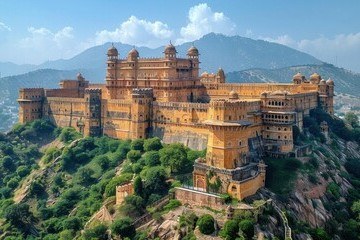
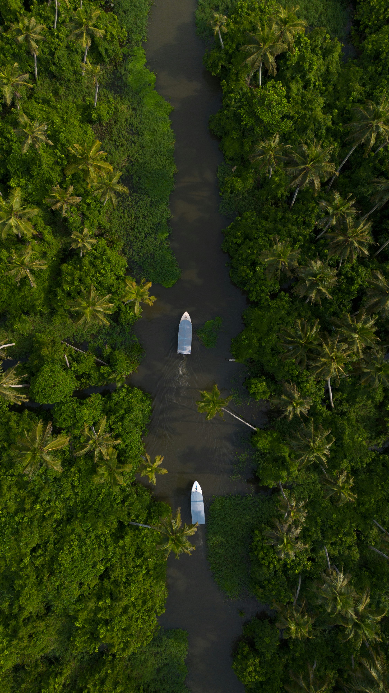
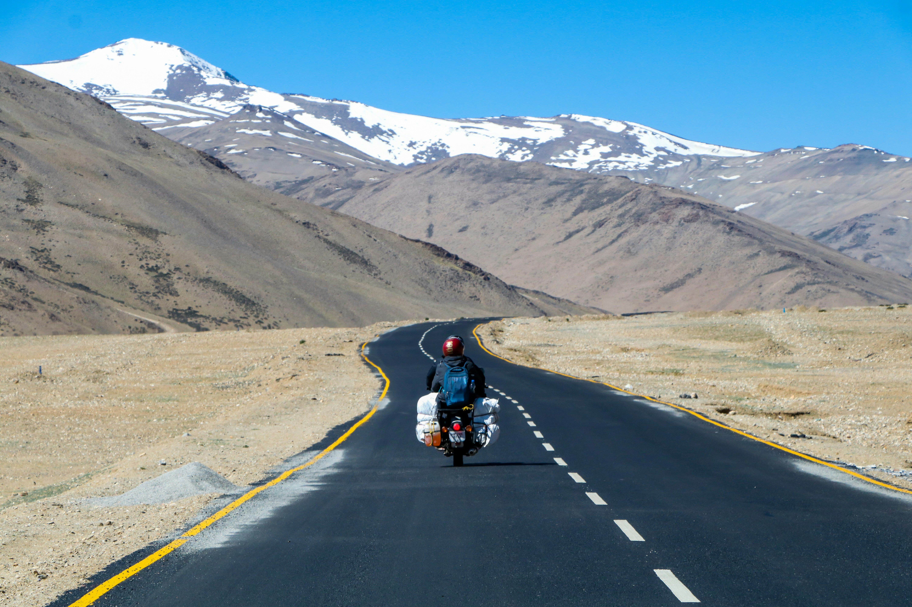

Jaipur, Rajasthan
Best Time: October–March
Top Attractions: Amber Fort, Hawa Mahal, City Palace
Food: Dal Baati Churma, Ghewar

Goa
Best Time: November–February
Top Attractions: Baga Beach, Dudhsagar Waterfalls
Food: Goan Patal Bhaji, Bebinca

Varanasi, Uttar Pradesh
Best Time: October–March
Top Attractions: Kashi Vishwanath Temple
Food: Kachori Sabzi, Malaiyyo

Kerala
Best Time: September–March
Top Attractions: Backwaters, Munnar Hills
Food: Appam, Kerala Fish Curry

Rishikesh
Best Time: September–April
Top Attractions: River Rafting, Lakshman Jhula
Food: Aloo Puri, Chotiwala Thali

Leh-Ladakh
Best Time: May–September
Top Attractions: Pangong Lake, Nubra Valley
Food: Momos, Thukpa

Andaman
Best Time: October–May
Top Attractions: Radhanagar Beach
Food: Seafood Curry